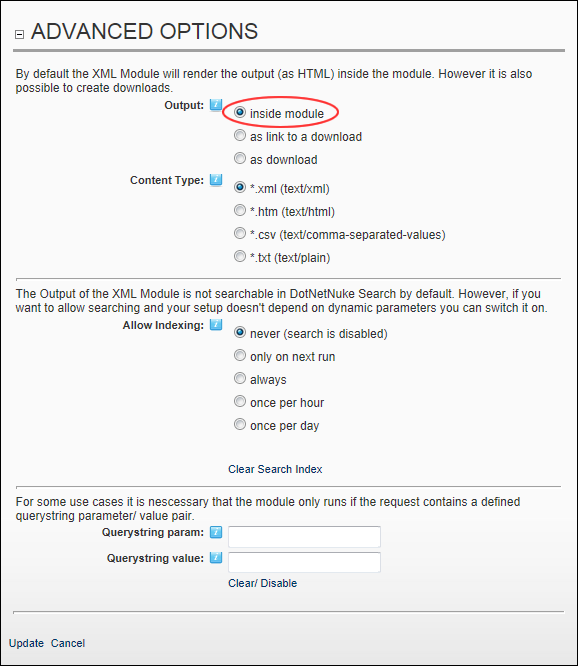

Displaying XML/XSL Output In the Module
How to set the results of an XML/XSL transformation as HTML content inside the XML module.
- Select
 Edit Module Configuration from the XML/XSL module actions menu. This opens the XML Module Configuration page.
Edit Module Configuration from the XML/XSL module actions menu. This opens the XML Module Configuration page.
- Maximize
 the Advanced Options section.
the Advanced Options section.
- At Output, select Inside Module.

- Click the Update button.